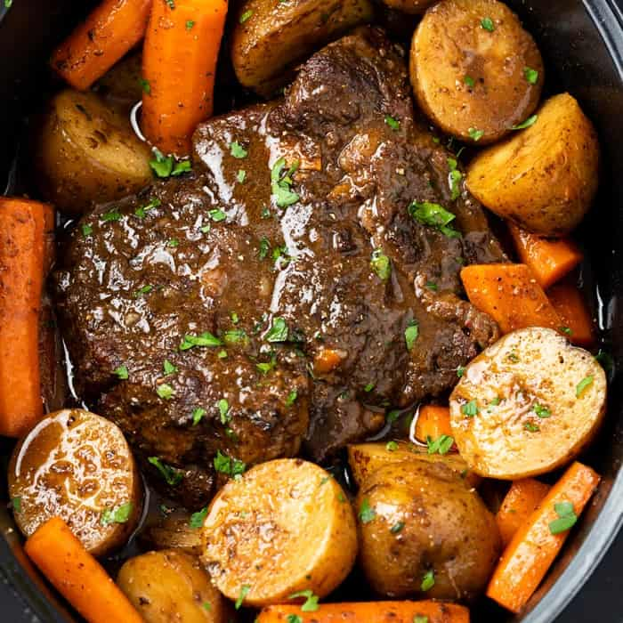

Home
Pot Roast

Description
This Pot Roast recipe is easy to make with potatoes, and thick, flavorful gravy.
the meat is moist and full of flavor, your family will love this home cooked meal!
Ingredients
- Small Yukon Potatoes
- Peeled Baby Carrots
- Chuck Roast Meat
- Beef Broth
- Garlic
- Salt and Pepper
Cooking Steps
- Season chuck roast generously with salt&pepper. Sear the meat in a skillet at High temp
for 2-3min per side. (This will lock in the flavor!)
- Wash and pat dry potatoes and carrots before putting them into the bottom of the crock pot.
- Add the chuck roast on top of the vegetables and pour beef broth on top.
- Add as much garlic as you like, put the top on to cover, and cook on slow for 8+hours.
Home
Beefaroni
Avocado Toast